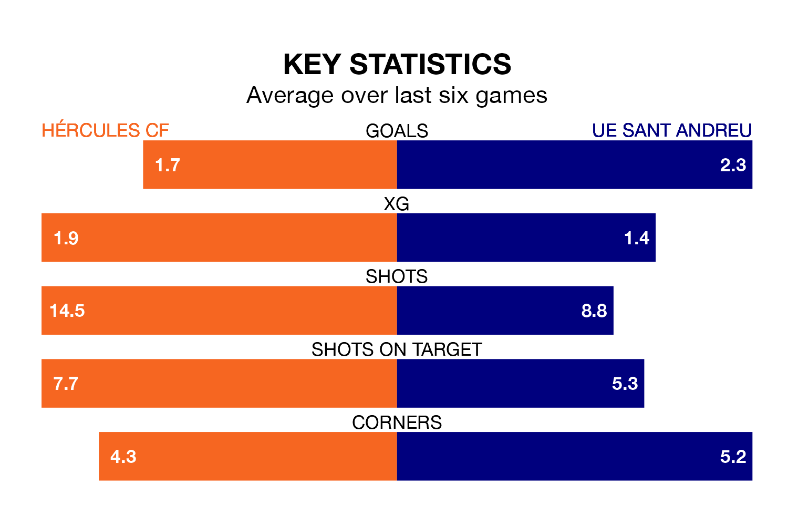

Hércules CF host UE Sant Andreu in Sunday's late match at the Estadio José Rico Pérez looking to bounce back from defeat last time out in Segunda División RFEF Group 3.
Hércules, who sit fourth in the league after 20 games, fell to a 2-1 away defeat to Torrent on January 28.
They face an UE Sant Andreu side who also lost their last match, a 3-2 defeat to CE Europa, and who sit fifth in the table.
With 32 goals in 20 games so far this season, UE Sant Andreu are the league's second-highest scorers with 1.6 goals per game. And they are conceding fewer than average, letting in 23 goals at a rate of 1.1 per game.
Hércules are also above average scorers, with 1.5 goals per game, compared to a league average of 1.2. They have conceded 1.0 goal per game.
The hosts are in mixed form in Segunda División RFEF Group 3, with two wins and a draw from their last six games.
With four wins and two losses over that period, the away side's form is better – they have taken 12 points from 18, compared to Hércules's seven.
Updated: 09:21 (UTC), 30/01/24